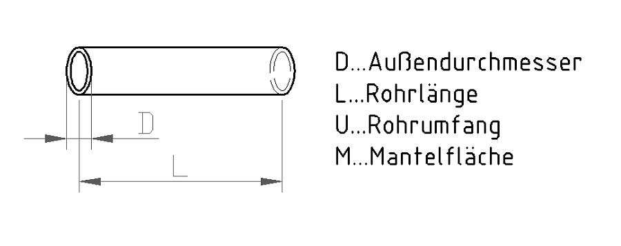

5 Mantelfläche von Rohren
Öffnet YouTube. Braucht Internet.
Zum Zeichnen und Rechnen am Papier. Braucht Internet.
Zuerst die Pflicht-Aufgaben (★★). Die Extra-Aufgaben (★★★) am Ende sind freiwillig.
Tippe in die Kästchen. Dann tippe auf „Prüfen“.
Grün = richtig, Rot = schau noch einmal.

M = Mantelfläche (die Fläche außen rundherum, z. B. zum Streichen oder Dämmen)
D = Außendurchmesser, L = Rohrlänge, U = Umfang
M = U · L
Umfang: U = D · π
Stell dir vor: Du schneidest das Rohr der Länge nach auf und rollst es flach. Dann ist es ein Rechteck: U lang und L breit.
Aufgabe 1 ★★

Gegeben: D = 40 mm, L = 7000 mm
Berechne den Umfang und die Mantelfläche.
Rechne in mm. Dann umrechnen: mm² → dm² ist : 10000 (zwei Stufen).
| Umfang U = | mm |
| Mantelfläche M = | dm² |
Aufgabe 2 ★★
Rohr mit D = 48 mm und L = 600 mm. Berechne den Umfang und die Mantelfläche.
Rechne in cm: D = 4,8 cm, L = 60 cm.
| Umfang U = | cm |
| Mantelfläche M = | cm² |
Extra: Wenn du noch Zeit hast ★★★
Pflicht geschafft! Du darfst hier aufhören.
Diese Aufgaben sind freiwillig. Hier musst du oft umformen und umrechnen.
Aufgabe 3 ★★★
Berechne den Umfang und die Mantelfläche. Achte auf die Einheiten!
| D | L | U | M |
|---|---|---|---|
| 63 mm | 1500 mm | dm | dm² |
Aufgabe 4 ★★★
Jetzt ist der Umfang gegeben. Berechne den Durchmesser und die Mantelfläche.
Durchmesser aus dem Umfang: D = U : π
| D | L | U | M |
|---|---|---|---|
| mm | 450 mm | 52 cm | dm² |
| mm | 350 mm | 19 cm | cm² |
Aufgabe 5 ★★★
Jetzt sind Umfang und Mantelfläche gegeben. Berechne den Durchmesser und die Rohrlänge.
Rohrlänge aus der Mantelfläche:
L = M : U
Zuerst gleiche Einheiten! Beispiel: 50,98 dm² = 5098 cm², dann durch 11,3 cm teilen.
| D | L | U | M |
|---|---|---|---|
| mm | mm | 11,3 cm | 50,98 dm² |
| mm | mm | 69 mm | 0,2419 m² |